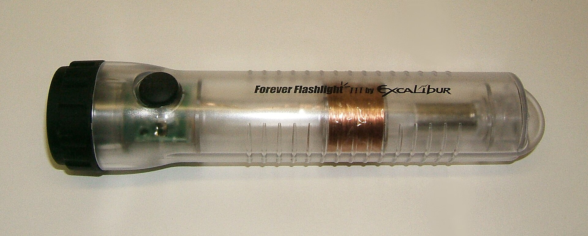
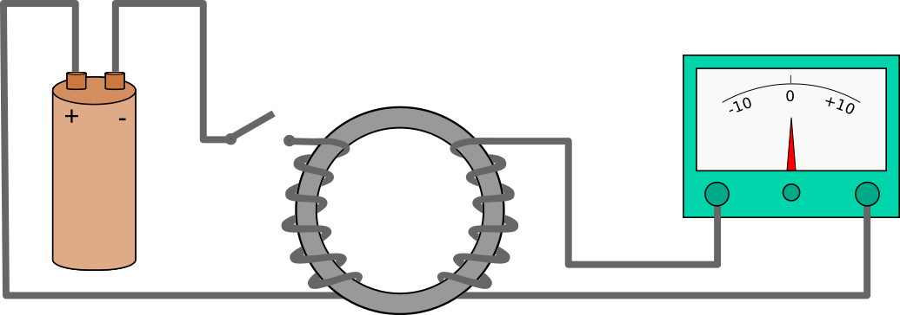
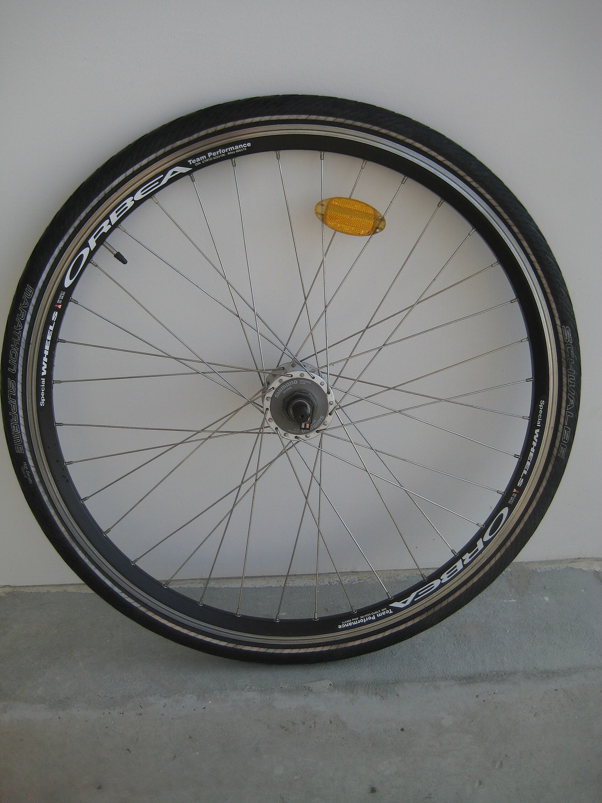
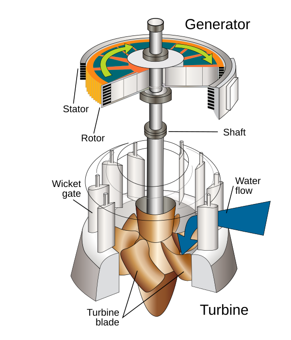
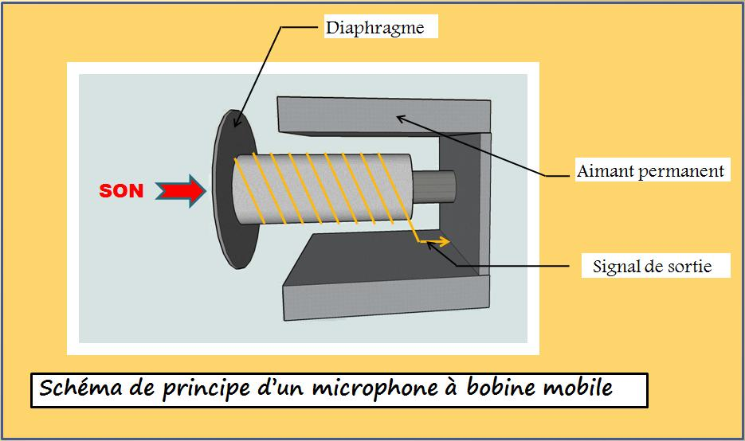
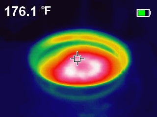

2026학년도 중학교 3학년 과학 • 물리 VI-2
건전지 없이 불을 켜는 손전등
제 15강: 전기 에너지의 발생
전자기 유도 · 발전기 · 역학적 에너지 → 전기 에너지
이 손전등에는 건전지가 없습니다

사진: Chetvorno, Wikimedia Commons, CC0
안에 든 것
구리선을 감은 코일, 그 속을 왕복하는 자석, 전류의 방향을 한쪽으로 정리하는 정류 회로, 그리고 전기를 담아 두는 축전기나 충전지.
흔들기만 했는데, 전기는 어디에서 왔을까요?
먼저 예상해 봅시다
예상 1
자석을 코일 안에 가만히 넣어 두면 전류가 흐를까요?
예상 2
자석을 빠르게 움직이면 무엇이 달라질까요?
예상 3
자석을 넣을 때와 뺄 때 결과가 같을까요, 다를까요?
학습지에 예상을 먼저 적은 뒤 실험을 시작합니다. 예상이 틀려도 괜찮습니다.
이 차시의 목표
[9과22-02]
자석의 운동에 의해 전류가 발생하는 현상을 관찰하고, 역학적 에너지가 전기 에너지로 전환됨을 설명할 수 있다.
관찰
언제 전류가 흐르고, 언제 흐르지 않는가
규칙
무엇이 전류의 방향과 세기를 정하는가
연결
이 현상이 발전기에서 어떻게 쓰이는가
탐구 — 자석을 코일에 넣었다 빼 보자
자기장 세기를 바꾸면 같은 속도에서도 유도 전류가 달라진다.
상대 속도 0 상대 유도 전류 0
자석을 움직여 보고, 바늘이 가장 크게 흔들리는 순간을 찾아 기록하세요.
관찰 결과를 정리하면
| 자석의 상태 | 코일을 통과하는 자기장 | 검류계 |
|---|---|---|
| 코일 쪽으로 가까이 | 점점 세진다 (변화 있음) | 한쪽으로 크게 |
| 코일 안에 정지 | 일정하다 (변화 없음) | 0 |
| 코일 한가운데 통과 | 거의 그대로 (변화 작음) | 작아짐 |
| 코일에서 멀어짐 | 점점 약해진다 | 반대쪽으로 |
| 같은 구간을 빠르게 | 같은 변화를 짧은 시간에 | 더 크게 |
자석이 코일 한가운데를 지날 때 값이 작아진 까닭은 무엇일까요?
핵심은 '움직임'이 아니라 '자기장의 변화'

그림: Eviatar Bach, Wikimedia Commons, CC0
코일을 통과하는 자기장이 변하면 코일에 유도 전압이 생긴다.
코일이 닫힌 회로를 이루고 있으면 그때 유도 전류가 흐른다.
이것을 전자기 유도라 한다. 자석을 움직이든 코일을 움직이든, 코일을 지나는 자기장이 변해야 한다.
그래서 움직여도 자기장의 변화가 없으면 전류는 0에 가깝다.
유도 전류의 방향은 무엇이 정하나
자기장이 세질 때 / 약해질 때
가까이 갈 때와 멀어질 때 방향이 반대
자석의 극
N극을 넣을 때와 S극을 넣을 때 방향이 반대
둘 다 바꾸면
방향은 원래대로 돌아온다
애플릿에서 극을 뒤집고 같은 방향으로 다시 움직여 확인해 보세요.
유도 전류를 더 세게 만들려면
단순화한 모형의 상대 비교 — 회로의 저항 등 다른 조건은 같다고 가정
더 빠르게 — 같은 변화를 짧은 시간에
센 자석 — 자기장의 변화 폭이 커진다
많이 감은 코일 — 여러 겹이 함께 겪는다
공짜 전기는 없다

사진: Sylenius, Wikimedia Commons, CC BY-SA 3.0
전조등을 켜면 페달이 더 무거워진다. 코일에 전구를 물리고 자석을 넣을 때 손이 뻑뻑해지는 것과 같다.
전기가 만들어진 만큼 누군가 일을 해야 하기 때문이다.
역학적 에너지 → 전기 에너지 → 빛·열에너지
발전기 — 코일 면이 기울면 통과 자기장이 변한다
회전각 0° 통과 자기장 최대 유도 전압 0
막대 = 자기장에 수직인 코일의 투영 면적
왜 방향이 계속 바뀔까 — 교류
0이 되는 순간
코일 면이 자기장에 수직일 때 — 통과하는 자기장이 최대라 변화가 없다
최대가 되는 순간
코일 면이 자기장과 나란할 때 — 통과 자기장이 가장 빠르게 바뀐다
한 바퀴에 두 번
방향이 주기적으로 뒤집힌다 → 교류
전압과 전류의 봉우리가 어긋나는 경우(위상차)는 부록에서 다룬다.
터빈과 발전기는 다른 부품이다

그림: U.S. Army Corps of Engineers, Wikimedia Commons, Public domain
물·수증기·바람 → 터빈 → 회전축 → 발전기의 회전자 → 전기
발전기는 자석과 코일 중 하나를 회전시켜 통과 자기장을 계속 바꾸는 장치다. 큰 발전기는 자석 쪽이 돌고 코일은 고정된 경우가 많다.
수력·화력·풍력·원자력은 터빈을 무엇으로 돌리는가만 다르다. 태양광은 터빈이 없어 예외.
이 중 전자기 유도를 쓰는 것은?

Master dpo, CC BY-SA 3.0
다이내믹 마이크
소리가 코일을 흔들어 전기 신호를 만든다 (콘덴서 마이크는 다른 방식)

CharlesMJames, CC BY-SA 4.0
인덕션 레인지
냄비에 유도된 전류가 냄비를 데운다. 유리판은 직접 가열되진 않지만 냄비 열로 뜨거워질 수 있다
지하철 회생 제동
감속할 때 모터를 발전기로 돌려 전기를 되돌려 쓴다
교통카드 · 무선 충전
단말기의 변하는 자기장이 카드·기기 코일에 전류를 유도한다
오늘의 정리
조건
코일을 통과하는 자기장이 변할 때 유도 전압 발생, 닫힌 회로면 유도 전류
방향
자기장이 세질 때와 약해질 때 반대, 극을 바꿔도 반대
세기
빠른 변화 · 센 자석 · 많이 감은 코일
에너지
역학적 에너지 → 전기 에너지, 공짜는 없다
형성평가 — 전류가 흐르는 경우
검류계에 연결된 코일에서 유도 전류가 흐르지 않는 경우는?
✅ 정답! ② 정지해 있을 때
코일을 통과하는 자기장이 변하지 않으므로 유도 전압이 생기지 않는다. ④는 코일이 자석에 가까워지면서 통과 자기장이 세지므로 전류가 흐른다.
오개념 확인
"움직이기만 하면 전류가 흐른다"는 설명이 맞지 않는 상황은?
✅ 정답! ①
둘이 함께 움직이면 서로의 거리가 그대로여서 코일을 통과하는 자기장이 변하지 않는다. 움직임 자체가 아니라 통과 자기장의 변화가 조건이다.
더 알아보기: 부록 — 과학사, 전자기파, 위상차